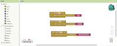

Será que você consegue agradar o Sr. Batata para conseguir o tão sonhado emprego nas indústrias batatas? Baixe o app e descubra!
Será que você consegue agradar o Sr. Batata para conseguir o tão sonhado emprego nas indústrias batatas? Baixe o app e descubra!
Este é um app de quiz, mas ele não é só um app comum, ele é um app que tem como objetivo enaltecer a superiodade da batata no nosso mundo, Como ele faz isso? Te colocando numa situação onde cada resposta sua pode te levar ao mundo do fracasso, uma entrevista de emprego, e assim como toda entrevista de emprego, a recompensa é um emprego, e o que seria melhor do que trabalhar para o próprio Sr. Batata? Se a resposta for nada, parabéns, está no caminho certo!
O aplicativo teve seu preocesso de criação durante o 'Aprenda a programar em um final de semama' da Mastertech e foi atualizado com o passar do tempo. A ideia de fazer um aplicativo de um quiz de batata surgiu da ideia de não ter nenhuma ideia, porém em algum momento a palavra batata surgiu na mente do criador e o aplicativo teve seu ínicio.
As perguntas foram pensadas para ter a maior graça possível, as respostas e menssagens de erro seguiram esse mesmo padrão. Ao longo das perguntas você percebe que a única coisa que você precisa fazer para acertar é ir na escolha mais sem noção possível, porém não é bem...
Depois de pensar em tudo, o próximo passo foi montat, para isso foi usado a ferramenta de ensino 'Mit app inventor'. O layout dele foi feito mesclando preto com branco, invertendo as cores ao entrar na segunda fase do jogo e detalhes vermelhos e verde para indicar se errrou, ou acertou. Programação foi algo simples, só precisou colocar os botões para direcionar o jogador para telas dferentes, se acertar tela seguinte, se errar volta para o ínicio
Caso tenha interesse no jogo, é possível jogar ele clicando na imagem